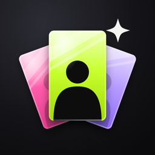

Pocca遇到问题、有建议，或者想要某个功能，直接来信：
2672309116@qq.com
一般两个工作日内回复。来信时说清你用的是哪一代 iPhone、系统版本， 以及问题出现前你做了什么，这样我能更快定位。
一个给 K-pop 小卡收藏用的图鉴。按人物整理，记录每张卡有了、想要还是还没有， 买了几张、花了多少钱；卡册可以按真实活页的宫格排版；账本帮你算总花费和想要清单还差多少。 不需要注册，没有广告。
所有方式都会先给你核对，确认后才入库，不会自动改掉已有的卡。
数据存在你的手机上。打开「iCloud 同步」后，还会存进你自己的 iCloud， 换手机或删掉 App 重装，登录同一个 Apple ID 就能找回。
建议 定期在「账本 → 设置 → 导出」备份一份。导出的是一个压缩包， 里面有表格和全部卡面照片，可以存到「文件」或电脑上； 需要时用「从备份恢复」导回来，同一张卡以最新修改为准。
从相册选图用的是系统照片选择器，不需要相册权限。 权限都可以拒绝，拒绝后只是对应功能用不了； 后悔了可以在系统「设置 → 隐私与安全性」里改回来。
说一句只用手机本机的中文语音识别，不上传录音。部分机型或系统语言下系统不提供本机识别， 可以在「设置 → 说一句」里看到是否支持。不支持时可以改用拍一张或手动添加。
「账本 → 设置 → 清除所有数据」，需要连点两次确认，清掉之后无法撤销。 如果开着 iCloud 同步，云端的数据也会跟着清空； 只想删云端，用「删除 iCloud 中的数据」。
发邮件给我就行，上面那个地址；App 里「设置 → 意见反馈」会自动带上版本号。 bug 请尽量描述复现步骤，附一张截图会很有帮助。